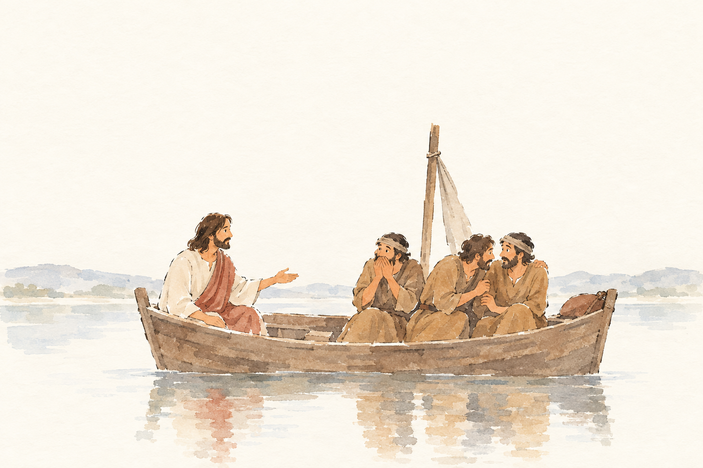
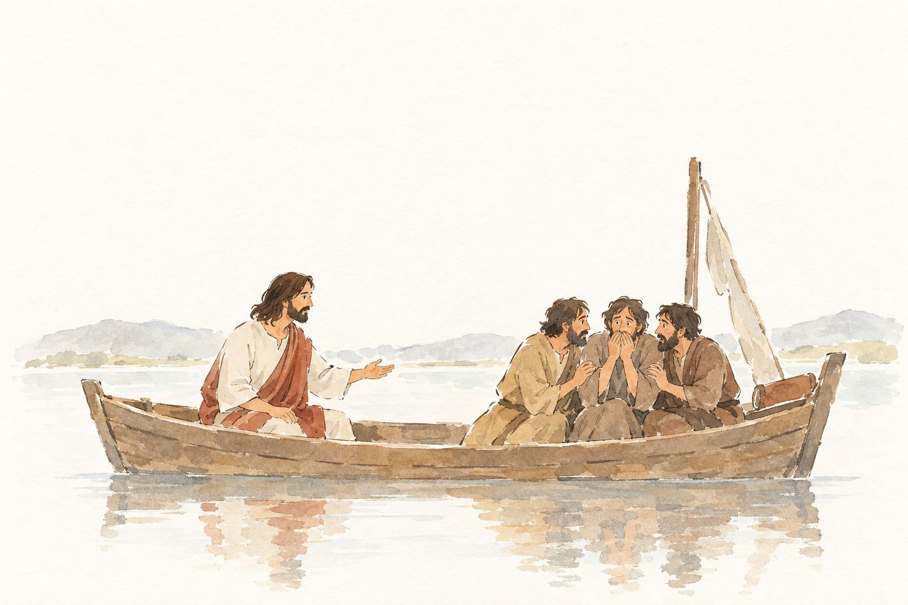
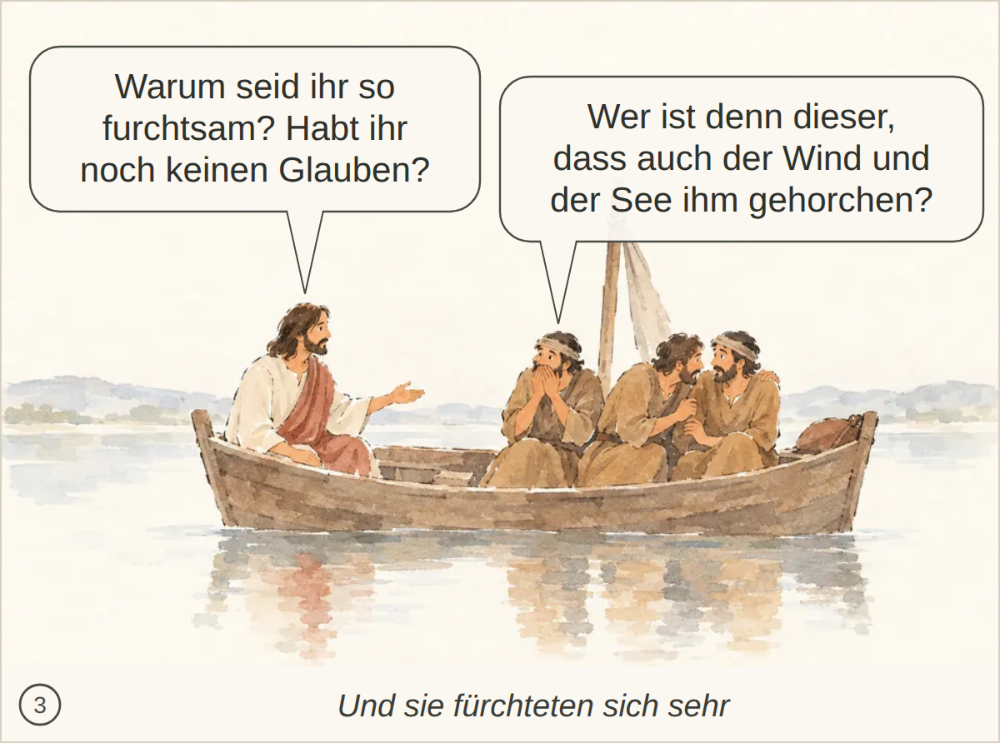

MRK-004-S3__r1v1.png ✔ gewählt: bestanden, 5 Punkte, Kern 2 Die konkreten Worte Jesu und die Frage der Jünger über Wind und See werden nicht ausdrücklich erkannt.
Blind: Four men are sitting in a wooden boat on calm water. The man on the left is addressing the three men on the right with an open-handed gesture, while the others appear anxious or deeply attentive. – This appears to illustrate a Bible story involving Jesus in a boat with his disciples, possibly the moment when Jesus speaks to frightened or concerned disciples on the Sea of Galilee.

MRK-004-S3__r1v2.png: bestanden, 5 Punkte, Kern 2 Nichts Wesentliches; die gesprochenen Worte und die Frage der Jünger werden nur angedeutet.
Blind: Four men are in a wooden boat on calm water. The man on the left sits calmly and gestures toward the other three, who are huddled together and look frightened or worried. – This appears to illustrate the Bible story of Jesus calming the storm, likely the moment after the danger when Jesus addresses the frightened disciples in the boat.

Kachel: bestanden, Kern 2 Nichts Wesentliches fehlt.